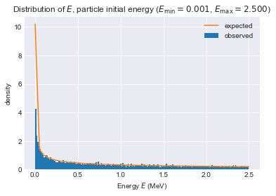

Task 1A — Derive the Cumulative Probability Function and its inverse
Hence, starting with probability density function
\[
f(E) = \begin{cases}
0 & E < E_{\min}\\
c/\sqrt{E} & E_{\min} \le E < E_{\max}\\
0 & E_{\max} \le E\
\end{cases}
\]
Show that the inverse CDF is
\[
F^{-1}(u) = \left(\frac{u}{2c} +\sqrt{E_{\min}}\right)^2\qquad\text{where}\qquad c = \frac{1}{2\left(\sqrt{E_{\max}}-\sqrt{E_{\max}}\right)}
\]
Task 1B — Derive the expected value and the variance of the CDF
Derive the mean and variance.
Task 1C — Verify generated samples follows the required distribution
Now to sample values, we sample \(u\sim{\cal U}(0,1)\), then \(E=F^{-1}(u)\) will follow the required distribution.
To verify this, set
12
E_min=0.001E_max=2.5
and then generate 10,000 samples and construct a histogram of (using plt.hist) as shown

Distribution of initial particle energy.
The red curve represents the required probability density function.
Verify that your generated energy values follow the required distribution for various (positive) values of \(E_{\text{min}}\) and \(E_{\text{max}}\).
Task 1D — Verify that generated samples match expected mean and standard deviation
Compare the mean and standard deviation of the sampled values against the expected mean and standard deviation. For 10,000 samples I obtained
12
Observed mean=0.85572 and std=0.74542
Expected mean=0.85033 and std=0.74327